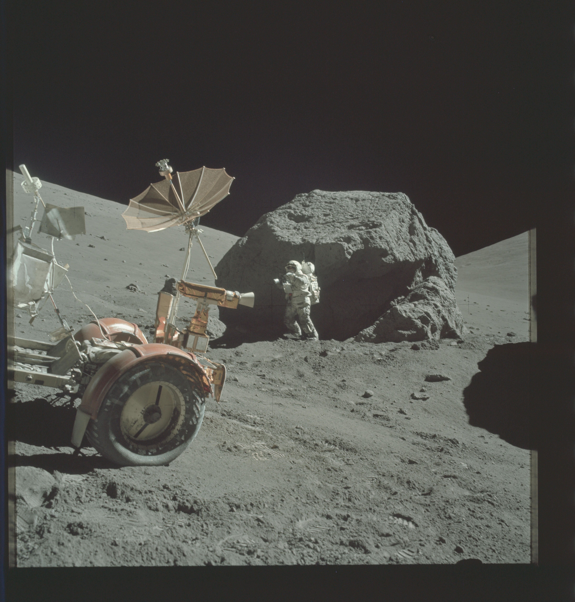
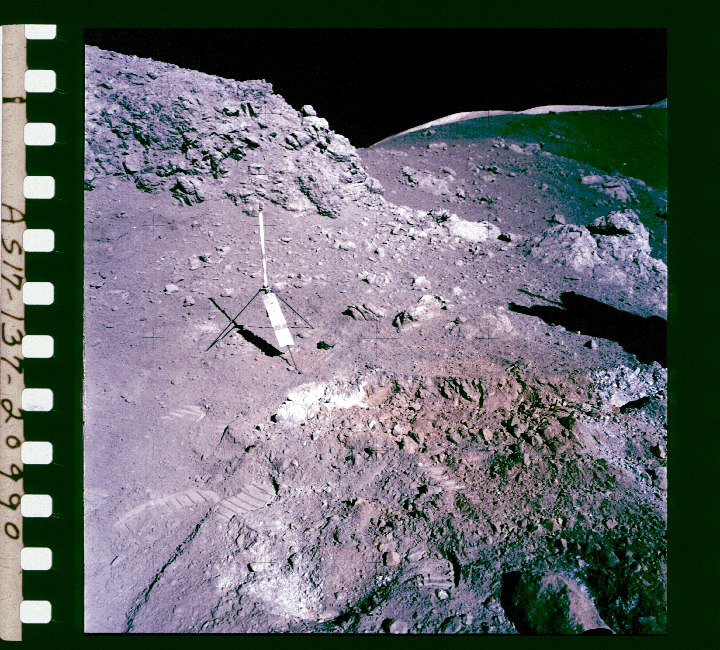

DR JOSHUA N RASERA / RESEARCH & CONSULTING
Make more
of our
materials.
Less water. Better separations.
More thoughtful resource systems.
Small-scale physics.
Real world implications.
 RESEARCHER. ENGINEER.
RESEARCHER. ENGINEER.LET’S TALK ABOUT MATERIALS. ↗
I’m Joshua Rasera, a mineral processing researcher and engineer at Imperial College London.
I investigate how particles charge, move and separate, and how those behaviours can help us process resources in environments where water, energy and infrastructure are constrained. My work spans dry beneficiation on Earth, lunar regolith processing, and the design of resource systems under uncertainty.
More about my work and background ↗ 01 / PUBLISHED RESEARCH
01 / PUBLISHED RESEARCHWhat happens when
you shake lunar soil?
Apollo samples, simulants and the particle behaviour hidden inside a granular bed.
Inside the study ↗ 02 / DRY BENEFICIATION
02 / DRY BENEFICIATIONSeparation starts
with a difference.
Tribocharging, electrostatic forces and the design of a better mineral separator.
Explore the mechanism ↗Micro-CT image: Rasera et al. (2025) · CC BY 4.0. Separator photograph: Rasera, Cilliers, Lamamy & Hadler (2023) · CC BY 4.0.
Dry processing.
Whole-process thinking.
Material characterisation, moisture sensitivity, separation testing and flowsheet evaluation are central to my work. I connect the behaviour of an ore with the choices needed to process it.
Explore the terrestrial research ↗
A different environment.
The same need to understand the material.
Resource processing begins long before a reactor makes a useful product. Feed preparation, size classification and mineral enrichment shape what happens next.
Explore lunar mineral processing ↗NASA / Apollo 17 · AS17-137-20990A separator is part
of a bigger decision.
My work with Imperial’s Strategic Engineering Laboratory connects engineering performance to resource value chains, deployment choices and uncertainty.
Explore the strategic engineering work ↗A proposal to strengthen?
A concept to test?
Let’s work on it.
Consulting opens in a new tab.